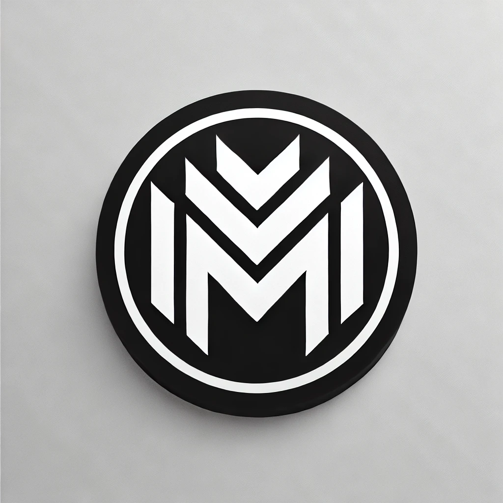

Mahmoud MOUZOUN
Web Developer | Data Analyst
About Me
Highly motivated and detail-oriented web developer and data analyst with strong analytical and communication skills.
Currently preparing for my Master's degree while seeking to leverage project management and full-stack development expertise to contribute to the success of any organization.
Professional Experience
- Data Analyst Intern | Wilaya d’Errachidia (Aug 2023 – Sep 2023)
- Preprocessed datasets by cleaning and handling missing values and outliers.
- Provided support for clients and collaborated with the IT department to solve complex issues.
- Full Stack Developer | SRIMTCom (Jun 2023 – Aug 2023)
- Collaborated with developers to define web application specifications and assisted in project management.
- Maintained and corrected bugs in applications while providing team support.
- Full Stack Developer Intern | SRIMTCom (Jun 2022 – Jul 2022)
- Developed front-end and back-end features for stock management applications.
- Defined specifications, provided user support, and fixed bugs.
- Developer (Personal Projects) | E-commerce Website
- Built an e-commerce site from scratch using PHP, MySQL, and Django.
- Implemented shopping cart functionality, product listing, and secure payment integration.
- Data Analyst (Personal Project) | Data Cleaning and Analysis
- Applied data wrangling techniques on a real-world dataset using Python and R.
- Ensured the dataset was free of inconsistencies and ready for analysis.